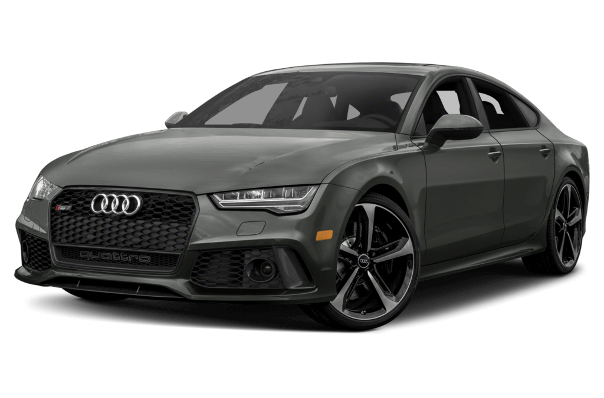
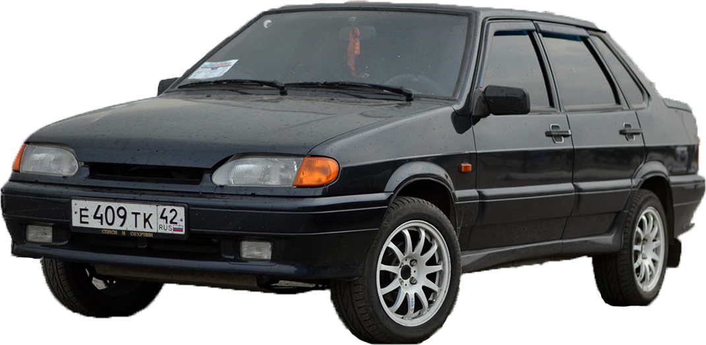
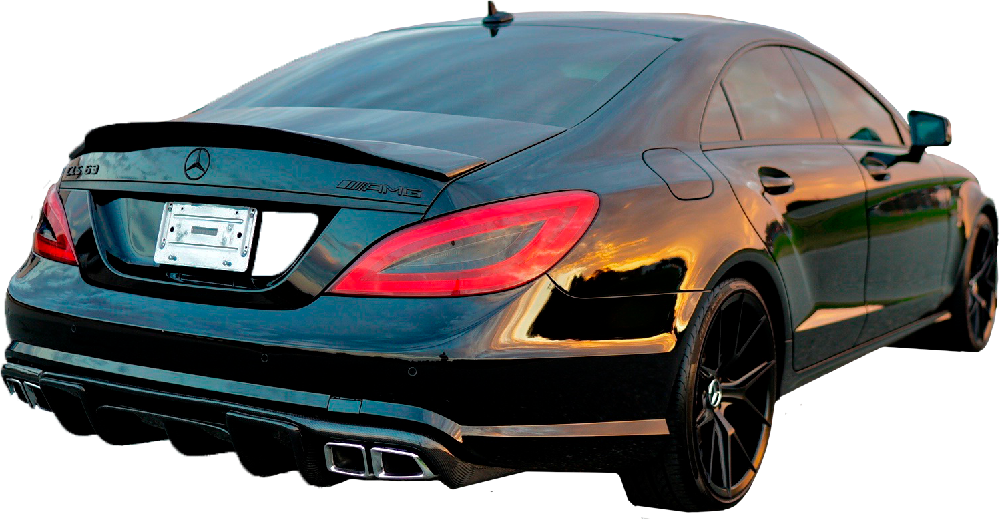
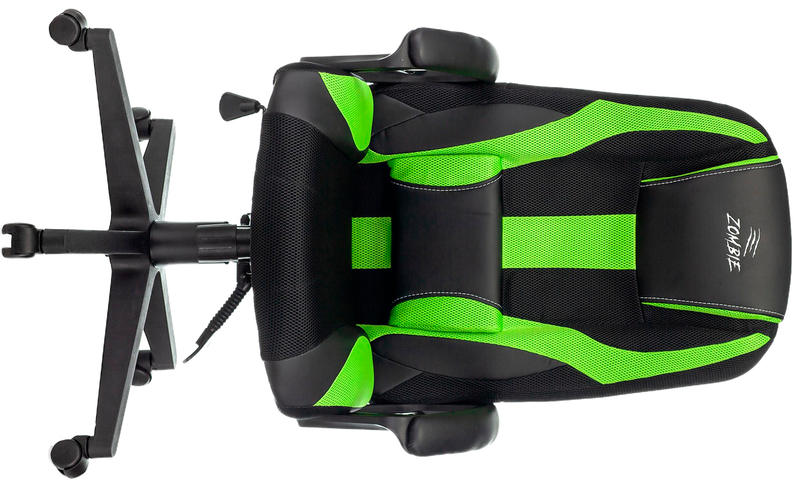
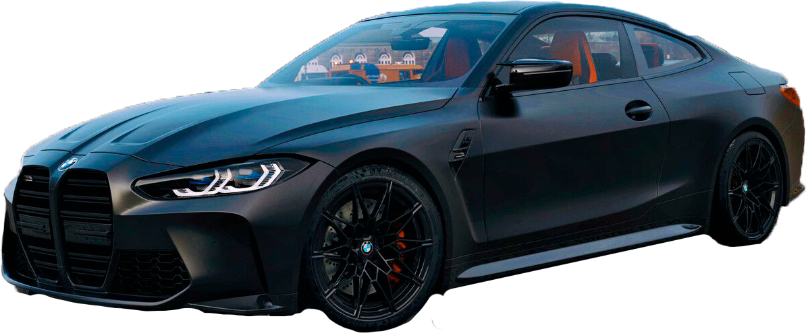
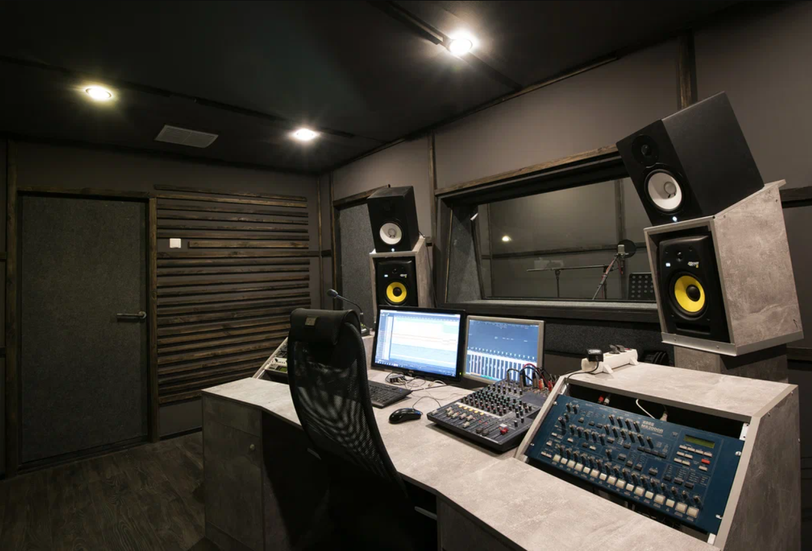
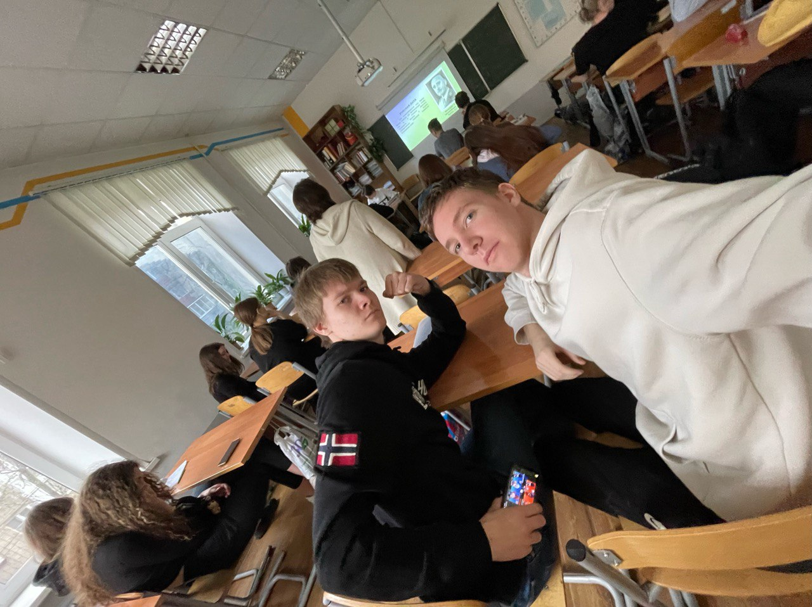
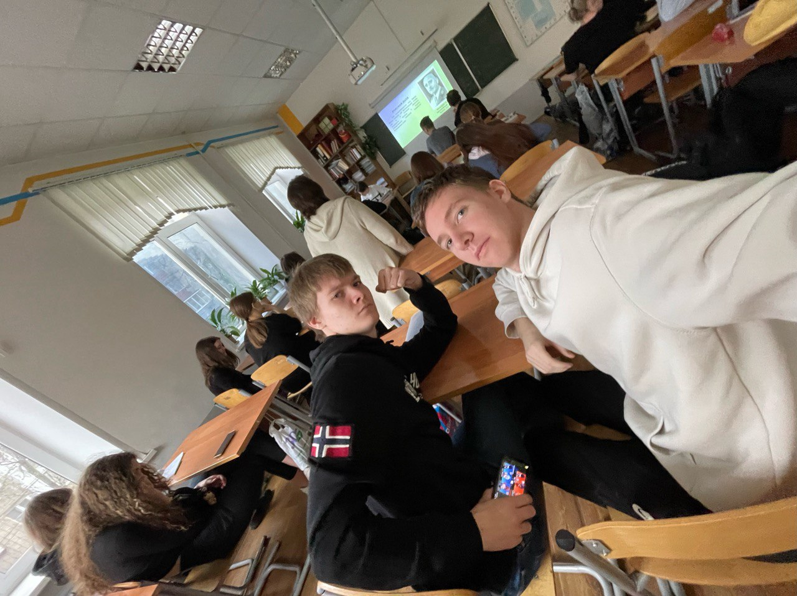

Наш любимый колледж


Двойная рис, куриная, чай, пицца брат если нет цезар
Макароны, куриная, чай, пицца

Двойная рис, куриная, чай

Макароны/греча, куриная, чай, булочка по усмотрению
Двойная рис, куриная, чай, пицца, цезар
Макароны, куриная, чай, пицца/цезар
Это аппарат Дани Швимм. Audi RS7 2020 — это тачка, которая на раз-два покажет, что такое настоящая мощь. Это не просто машина, а зверь в кузове седана. Под капотом у неё V8 4.0 литра с турбиной, выдающий 600 лошадей, что даёт тебе разгон до сотки за какие-то 3,6 секунды. Снаружи она выглядит как настоящий хищник — агрессивный обвес, широкие арки, чёрные диски и злые фары. В салоне тоже всё по высшему разряду: карбон, кожа и топовая мультимедийка. В общем, когда садишься за руль этой тачки, понимаешь — ты на вершине. На дороге RS7 заставляет всех уважать, потому что это не просто Audi, это RS.
Это аппарат Ромы Долг. ВАЗ 2115 — это настоящая легенда среди наших пацанов. Эту тачку знают все, кто катается по дворам и улицам. Под капотом у неё дикие 1.6 литра и 81 лошадка, она свою работу знает: тащит, куда надо, и не подводит. Внешне она — классика жанра: строгие линии, фаркоп, обвесы — всё, как должно быть у правильной машины. Салон — простой, но уютный, ничего лишнего. Управляется 2115 легко, ремонт — по карману каждому. В общем, это тачка для тех, кто знает толк в настоящей отечественной технике и уважает свои корни.
Это аппарат Влада Абрам. Mercedes-Benz CLS 63 — это не просто автомобиль, это четырёхдверный "псс, парень, давай сделаем это быстро". Он выглядит так, будто только что сбежал с гоночной трассы, но при этом до сих пор настаивает на том, что это семейный седан. Этот монстр с 600 лошадями под капотом не знает слова "остановка", а светофоры для него — просто декоративные препятствия для других машин. Каждый раз, когда ты давишь на газ, двигатель ревёт так, будто он только что выпил кофейку и закурил пачку чапмана.
Это аппарат Владоса. Его игровое кресло — это настоящий спорткар для ленивых. Каждый раз, когда он в него садится, кажется, будто он собирается на марафон, хотя на самом деле он лишь готовится к очередному десятичасовому забегу по холодильнику и обратно. Подлокотники настроены идеально для того, чтобы держать чипсы на уровне идеальной подачи в рот, а наклон спинки позволяет балансировать между "я почти уснул" и "ещё одина катка, и точно спать".
Это аппарат Никиты Распутина или еще Литвина, хз. BMW M4 G82 — это машина, которая так сильно любит скорость, что кажется, будто она считает светофоры просто красными декоративными огнями. Каждый раз, когда ты садишься за руль, она словно шепчет тебе на ухо: "Педаль газа справа, но ты и так это знаешь, да?" Этот зверь на колесах настолько агрессивен, что соседний гараж начинает нервно подпрыгивать, услышав его рычание. А когда ты случайно увидишь свой счет за бензин, то поймешь, что у тебя не машина, а маленькая немецкая нефтяная компания на колесах.
А это Димы Гольчикова логово. На машинах он ездить не хочет.
Влад Ободков самый не спокойный парень во всём колледже, своей добротой он окружает как одногрупников так и учителей. Он всегда делает домашнюю работу и делится своими достижениями в учёбе, новыми знаниями. Он любит спать, но не разу не спал на парах. Так же как и все Тутаевские ребята Влад ходит в зал. Из недостатков Влада это его не понятный почерк, но это к лучшему, ведь гений не должен распространять свои мысли.
Даня Швиммер самый умный парень в группе, он любит физику, математику и английский язык. Он всегда помогает с домашней работой, всегда объясняет если ты не понял какой-то материал. Даня любит заниматься спортом и ходит в спортивный зал. Любит пиццу и чебупели. Из его недостатков это, что он не любит ждать и уходит один без своих друзей, а так же любит спать на парах. Даня имеет большую коллекцию кошек.
Влад Абрамов примерный ученик нашей группы, на которого все равняются. Влад окружён вниманием учителей, одногруппников и девочек. Он живёт в Тутаеве и каждый день ездит в колледж на 500 автобусе. Владик очень любит спорт, поэтому посещает спортивный зал в Ярославле почти каждый день. Любимая еда влада, это салат цезарь из столовой колледжа. Из недостатков Влада это то, что он не делится с друзями секретами своего успеха
Дима Гольчиков самый общительный парень в группе, он поддерживает хорошие отношения с учителями, поднимает им настроение, как и всем остальным в группе. Из недостатков в характере Дмитрия это его лень, он не любит делать домашнюю работу, поэтому зачастую мы помогаем ему с этим. Дима любит чипсы, интересуется брендовыми вещами и самыми новыми трендами. Из предметов он больше всего любит историю и обществознание, так как ему нравится учить много теоритического материала, и потом сдавать зачёты. Ещё он заинтересован физической культурой, так как любит ходить в зал и имеет хорошую фигуру
Lets gere, Lets go.- любимая фраза Никиты. Никита очень любит Градостроительный колледж, поэтому переехал в Ярославль. В свободное время от колледжа, он подрабатывает охранником в пятёрочке. Его любимое блюдо это пельмени, но он не любит их готовить, поэтому зачастую ест в колледже. Из недостатков Никиты это только то, что он до сих пор не нашёл свою возлюбленную, но в активных поисках, поэтому часто забывает о своих друзьях. Он бывший спортсмен по лыжам, и до сих пор показывает свои успехи на внутреколледжных соревнованиях.
Роман Долгов - истинный ебатель игры Brawl Stars. Говорят, что он может сделать что-то плохое, если проигрывает в ней. Довольно примерный ученик, но в последнее время он связался с настоящей оторвой и сейчас у него есть долги(и нет, это не отсыл - на фамилию). Роман очень любит бренд "Каменный остров". За него он готов продать душу. Ему нравятся красивые примерчики по математике и конечно же, изящные задачки.

 
